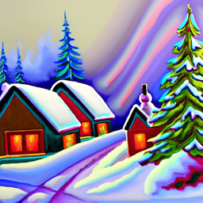

Project 5 - Fun with Diffusion Models
Part A: The Power of Diffusion Models!
Overview
The purpose of this part is to play around with the DeepFloyd IF diffusion model and implement the sampling loops.
This will help generate some interesting images.
Part 0: Setup
For this project, I am using the seed 180.
Below are the images that I generated with num_inference_steps = 20:
an oil painting of a snowy mountain village

a man wearing a hat

a rocket ship

And below are the images that I generated with num_inference_steps = 80:
an oil painting of a snowy mountain village
The output for when num_inference_steps is 80 appears more realistic, while the output for 20 appear to be more obvious that it was generated artificially.
For example, the snowy mountain has a certain glossy and blurry perspective to it, looking like an illustration for children.
The man also has his eyes crossed, and there is a certain gloss to his face.
The rocket ship also looks like a simple model made in blender with simple lighting and textures.
Even so, the images for num_inference_steps = 20 are still clear on what they represent.
The results for num_inference_steps = 80 are obviously much better, where the first image is clearly a painting, showing styles of oil art.
The man's face, clothes, and hat has a much more realisitc texture too, which makes it look like the photo might be real.
And the rocket ship looks much more artistic, more close to what a human artist might create.
And for other trials, the results are similar in that as we increase num_inference_steps, the outputs become much more realistic and less like they were generated by a computer.
Part 1: Sampling Loops
Overview
The purpose of this part is to play around with the DeepFloyd IF diffusion model and implement the sampling loops.
This will help generate some interesting images.
1.1: Implement the Forward Process
I've implemented the forward(im, t) function as described in the project spec.
Below are the images I generated by adding noise to the test image at noise levels [250, 500, 750]:
Berkeley Campanile

Noisy Campanile at t=250

Noisy Campanile at t=500

Noisy Campanile at t=750

As shown, when the test image gets more and more noise introduced, the image gets more and more noisy.
So, t=750 yielded the most noisy image, where the Campanile is barely visible.
1.2: Classical Denoising
Below are the Gaussian-denoised images for each of the above noisy images:
Noisy Campanile at t=250
Noisy Campanile at t=500
Noisy Campanile at t=750
Gaussian Blur Denoising at t=250
Gaussian Blur Denoising at t=500
Gaussian Blur Denoising at t=750
The results here do match what is expected as shown in the project spec.
Although the images are still noisy, the gaussian blur denoising does blur the noisy pixels, which make the images seem more smooth and uniform.
Even so, denoising using this method still does not help get back a clear image.
The results are still noisy, and they are no more clear than before.
1.3: One-Step Denoising
As described in the project spec, I used the UNet to denoise the image by estimating the noise.
Then I passed it into stage_1.unet, and I tried removing this noise to obtain the original image.
Below are the results for this approach for t = [250, 500, 750]:
Berkeley Campanile (Original Image)
Noisy Campanile at t=250
Noisy Campanile at t=500
Noisy Campanile at t=750
One-Step Denoised Campanile at t=250
One-Step Denoised Campanile at t=500

One-Step Denoised Campanile at t=750

The results here do match what is expected as shown in the project spec.
And, the results appear to be much better.
The images using this method are now much more clear, and even for t-750 we can see the faint figure of some tower.
But still, the images are too blurry for higher levels of t.
Even for low levels of t, such as t=250, the produce image still differs.
You can see that the bottom is actually different, although the shape of the tower is very close to the original.
1.4: Iterative Denoising
I first created strided_timesteps, which is a list starting at 990, with stride of 30, which monotonically decreases until hitting 0.
Then, while running the loop to denoise the image, I displayed the results after every 5th loop.
Finally, I outputed the final result.
Below are the images for this part:
Noisy Campanile at t=90

Noisy Campanile at t=240

Noisy Campanile at t=390

Noisy Campanile at t=540

Noisy Campanile at t=690

Original
Iteratively Denoised Campanile
One-Step Denoised Campanile
Gaussian Blurred Campanile

As you can see, this is now getting much better.
This approach to iteratively denoise an image yields a more clear and better image compared to the past methods.
But because of the noise introduced, the final image isn't the same as the original.
It will only maintain the overall shape, but the actual details will still differ.
1.5: Diffusion Model Sampling
For this part, I first got an image of pure noise, and then based on the prompt of "a high quality photo" I tried to generate an image.
Below are the 5 results I got for this part:
As shown, the images do seem tangible and semi-real.
However, they appear sort of random.
For example, although the first image of writing on paper does seem to be realistic, it does not really make one think of a "high quality image", since the majority of the image seems to be of the paper.
We should still want better results that are closer to "a high quality image".
1.6: Classifier-Free Guidance (CFG)
In this part, we now implement and use a CFG to create the images based on the previous prompt for better results.
Below are the 5 results I got for this part:
Now, these images appear much better than those samples from the previous attempts.
The images like the woman's face or the wedding photo are much more realistic and "higher quality".
1.7: Image-to-image Translation
For this part, we try to get a range of images using the CFG, first starting out with an image produced with the prompt "a high quality photo" and gradually morphing into our Campanile photo.
Below are the results at the noise levels [1, 3, 5, 7, 10, 20]:
SDEdit with i_start = 1

Campanile (Original)
Each run yielded a different result, as the original images are randomized.
But these were the ones I liked.
You can see the progression as the first image gradually morphs into the Campanile, where the model managed to learn about the sky as th background.
Even so, the image with i_start = 1 always appear to be random and unrealated to the original image for the progression.
For my own too images, you can also see the progression.
The first image is seems random, but the rest are apparent on how they gradually morph into my original image.
Below are 2 other edits to show the progressions based on two images of my dog, using the same procedure:
SDEdit with i_start = 10

1.7.1: Editing Hand-Drawn and Web Images
For this part, I show the progression as implemented above for 2 hand-drawn images and 1 web image.
Below are the three progressions for noise levels [1, 3, 5, 7, 10, 20]:
i_start = 7

i_start = 7

i_start = 1

i_start = 20

Hand drawing of lego head with background
Indeed, the progression here look much better, since the 3 images I used are all nonrealistc.
The progression near the end where i_start=10, 20 appear closer and closer to their respective original images.
1.7.2: Inpainting
Now, we play around with inpainting.
The high-level idea is that we apply a mask so that we only create new content in that determined area.
This means that most of the image will still be the exact same as the original, except now the image will have some interesting feature generated in it.
I used the campanile photo and my two dog photos for this section.
Below are the results, showing the mask, area, and final output:
Campanile
Mask

Hole to Fill

Hole to Fill

The results look nice and interesting.
For the Campanile, the model gave the bell tower an interesting new top.
For my dog image, I was just curious on what toy or object it would generate.
For the first image, it appears that the model is trying to generate some bag, as the dog is on a lawn.
For the second image, maybe because of the hard wood floor, the model might be generating some sort of chew toy for the dog.
1.7.3: Text-Conditional Image-to-image Translation
Now, we use a different prompt to help guide the image progression generated.
This helps add more control to direct the progression, which hopefully yields more interesting results.
For the first image, the Campanile, I used the prompt "a rocket ship".
For the second dog image, I used "a photo of a man".
For the last image, I used "a man wearing a hat".
After running the model, the results seem pretty interesting.
In total I had enough time to run it many times to see which ones I liked the best, and also because the model was not always really good at generating clear results.
Out of all of my trials, below were the ones that I liked the most:
Rocket Ship at noise level 1
Rocket Ship at noise level 3
Rocket Ship at noise level 5
Rocket Ship at noise level 7
Rocket Ship at noise level 10
Rocket Ship at noise level 20
Campanile (original image)
Man at noise level 20

Dog on lawn (original image)
Man with hat at noise level 1
Man with hat at noise level 3
Man with hat at noise level 5
Man with hat at noise level 7
Man with hat at noise level 10
Man with hat at noise level 20
Dog as puppy (original image)
The morphs here look much better and more smooth in transition.
I would just like to point out that the Man with hat at noise level 10 was interesting to me, because it really reminded me of the professor.
1.8: Visual Anagrams
We now attempt to create visual anagrams.
Below are the results, and the prompts are labeled for the images:
an oil painting of an old man
an oil painting of people around a campfire
an oil painting of an old man
a man wearing a hat

For this part, I had to run the model many many times.
The results that I chose in the end are the ones that I really liked; most others yielded really random and bad results.
For the first set, you can clearly see a man looking downwards, and in the right image you can see smoke rising from what appears to be a fire.
For the second set, it looks like an old man with shades, and the right image looks like a dog, where the eyes are barely above the protruding nose.
For the third set, the left image has a clear man with a had.
Interestingly, the right image's man has a significalty smaller head, where it appears to be a soldier with a uniform hat.
1.9: Hybrid Images
Now, we attempt to create hybrid images similar to those in project 2.
Using the suggested way to combine the two noises from different prompts, I created make_hybrids and generated the images.
Again, most of these results weren't good and accurate, so these images are the results that I liked the most out of many many runs.
I have also included a description below the two sets of images, one enlarged and the other shrunk for a more visible effect.
Below are the three images, their prompts are above the images, and the description below:
a lithograph of waterfalls
For the first one, the model set the waterfall as the skull's nose, and the side-border around the skull looks like trees in a forest.
The nose also has a hole, which in detail resembles a large stone in a waterfall.
an oil painting of an old man
an oil painting of a snowy mountain village
For the second image, from far away it looks like an old many looking to the right, with his face yellow-orange and white hair.
Close up, the image looks like a snowy mountain, where the village created the bright areas on the right side face of the mountain.
Below the mountain appears to be a forest for this second image.
an oil painting of an old man
an oil painting of people around a campfire
For the third image, it looks like a face of a balding old man with a long temple, similar to Singed from Arcane.
When viewing the image close-up, we can see figures of people around what seems to be a small campfire.
The patters behind seem to resemble a large tree and other forestry, which suggests that the camp is in a forest.
Part 2: Bells & Whistles
To create something cool, I decided to create a hybrid image.
My favorite result was of the image between the old man and a campfire, where the forest branches added much more detail when viewed close up.
And, the figure of the old man's shape really resemble those from old oil paintings, which made me like it even more.
Below is the image:
For the course logo, I really liked the image produced when trying to form a progression from a man with a hat to my dog.
The artistic style really resembles that of sketchwork, which made it really strikingly realistic to me.
Also, the figure and eyes instantly reminded me of Professor Efros, which made it stand out more to me.
Below is the image:
Part B: Diffusion Models from Scratch!
Overview
In this part of the project, I now implement and train my own diffusion model on MNIST.
I used google Collab's TPU to run my notebook, and I used the paper/equations provided to construct the diffusion model's architecture and algorithms.
Part 1: Training a Single-Step Denoising UNet
Part 1.1: Implementing the UNet
For this part of the project, I implemented the UNet architecture as described.
For reference, below is the architecture and tensor operations that I have implemented in my notebook:
Unconditional UNet Architecture

Standard UNet Operations

Part 1.2: Implementing the UNet
Here, I trained a denoiser using the unconditioned UNet.
As mentioned in the project, for each training batch I generated z from x using z = x + sigma * epsilon, where epsilon is from a normal distribution with mean 0 and standard deviation I.
Below are the visualizations for noising processes over sigma = [0.0, 0.2, 0.4, 0.5, 0.6, 0.8, 1.0]:
Visualization of noising process
As a reference, I compared it to the expected plot in the project spec, and both look very similar.
The left-hand side column contains the raw original images.
Because sigma = 0.0, no noise is injected in, so the image is obviously clear and in its original form.
However, as sigma increases, we see the outline of each figure begin to become faint.
The background also becomes more noisy, where it becomes more pixelated and much more middle-grey.
The right-hand side column contains the most noise that is injected into the image.
As expected, this is the most blury, and we can barely make out any of the figure shapes.
0's figure for sigma = 1.0 is almost completely gone, and we can barely make out the circular oval.
However, 4's shape is even more faint for sigma = 1.0, and we can barely notice any figure.
Part 1.2.1: Training
Now, I trained the model to perform denoising.
I used the suggested parameters, such as sigma = 0.5, batch_size = 256, epochs = 5, D = 128, and lr = 1e-4.
I also used the Adam optimizer from torch.nn, and I used the MNIST dataset and loaders to easily load and train the data.
Below is the figure for the training loss curve plot for every few iterations during the whole training process:
Because of the values, I used the log scale for the y-axis.
And, as expected, my results are very similar to the results from the project spec.
As I train the model for more iterations, the loss continues to decrease, and towards the end the shift is very small.
The most significant sharp decrease in loss occurs before 100 steps according to the graph, which appears to be around 50 steps.
I also visualized the denoised results on the test set at the end of training. Below are the sample results after the 1st and 5th epochs:
Results on digits from test set after 1 epoch
Results on digits from test set after 5 epochs
Again, the results that I generated are very similar to what was shown in the project spec.
After epoch 1, the results were still a bit uncertain.
Like the project spec, there were faint white splotches around the digit figures.
For example, for my results, there is a small faint white dot to the bottom-right of the 1-digit figure after 1 epoch.
However, my results became immediately much sharper and distinct after 5 epochs.
Similar to the project spec, my results for the input and output images are almost identical in clearness, albeit some small differences in figure structure.
So, the outputs are still not purely identical to the inputs, but compared to epoch 1 results, epoch 5 yielded much better output images.
Part 1.2.2: Out-of-Distribution Testing
Specifically, the unconditioned UNet model was trained for sigma = 0.5.
For this part of the project, I generated results to show how the denoiser performed on different sigmas that it wasn't trained for.
Below are the results for sigma = [0.0, 0.2, 0.4, 0.6, 0.8, 1.0]:
Results on digits from test set with varying noise levels
Again, my results are very similar to the results from the project spec.
I chose to show the digit 7 from the test set.
The results I produced also make sense.
The model was trained on sigma = 0.5, so ideally it should be great at denoising images with sigma <= 0.5.
And as expected in my figure, the first 4 images are all almost identical, with clear results showing a denoised 7 figure.
However, the results for sigma = 0.6, 0.8, and 1.0 show a progression of error in denoising the noisy image.
The worst result is where sigma = 1.0.
This also makes sense, as our unconditioned UNet model was not trained for such high levels of noise.
So as more noise is introduced into the test images, the denoised results will get progressively more and more error-prone.
sigma = 0.6 looks the most close to sigma = 0.5's result, but we can faintly see some faint white patches being introduced near the figure already.
Part 2: Training a Diffusion Model
Part 2.1: Adding Time Conditioning to UNet
In this part we modify the UNet architecture to inject scalar t in order to condition it.
I've implemented FCBlock and modified the architecture as recommended.
Below are the diagrams to refresh the structure:
Conditioned UNet Architecture

FCBlock for conditioning

Part 2.2: Training the UNet
Following the pseudocode for the training algorithm, I've trained the time-conditioned model and generated the loss curve.
I've followed the spec for the model parameters, such as epochs = 20, batch_size = 128, D = 64, and initial lr = 1e-3.
Below is the loss curve plot for the training process:
As expected, my results look very similar to the results from the project spec.
Because of how small the loss values are, I decided to use the log scale for the y-axis.
As the number of steps increased, the loss fell sharply until it began to plateau out.
It seems that the graph's decrease descent began to slow down before 1000 steps, around 100 steps.
After this, the loss graph seems to fluctuate and flatten out, barely decreasing as there is no longer any significant change in loss as we train the model more.
Part 2.3: Sampling from the UNet
I've followed the pseudocode algorithm for sampling for the time-conditioned UNet.
Below are the output results I generated after training the model for 5 epochs and 20 epochs:
Here, we begin to get a sense on how the model is performing as it is trained more and more.
After 5 epochs of training, we can already see clear figures.
Some of the figures are also apparent, such as some of the 3s or 0s.
However, there are enough figures that don't seem coherent.
For example, some of the 9's don't appear to be complete, where they appear to be almost an 8.
And, some of the 2s appear to be more like squiggly lines than a solid 2 digit.
But after 20 epochs of training, the figures are now almost all completely clear and solid.
Some of the figures, such as the 8 in the lower-left side, are still a bit corrupted.
But other ones, like all of the other 8s, 7s, 3s, etc are very obviously their respective digit figures.
This makes sense, because as we train the model for more epochs, it should get much better and more accurate at denoising pure noise into figures.
But as the training loss graph shows, increasing the number of epochs after a certain point won't necessarily yield significantly better results.
So there will be a limit to how well the time-conditioned UNet can perform in creating digit figures.
And as the results for 20 epochs of training are good enough, we will try another approach to yield better results.
Part 2.4: Adding Class-Conditioning to UNet
Now, we add class conditioning to our previous architecture.
Following the pseudocode, I've added two more BCBlocks to the UNet for injecting the class-conditioning vector c.
This should help the model yield better results when generating specific digits.
The training algorithm, as described in the spec, is mostly the same as the previous part, except for using c.
Using the same parameters otherwise as before, I trained the model and generated the loss curve plot:
As expected, my results look very similar to the results from the project spec.
Because of how small the loss values are, I decided to use the log scale for the y-axis.
As the number of steps increased, the loss fell sharply until it began to plateau out.
It seems that the graph's decrease descent began to slow down before 1000 steps, around 100 steps.
Also, the eventual value that this curve plateus around appears to be slightly smaller than the previous part.
Part 2.5: Sampling from the Class-Conditioned UNet
The pseudocode algorithm for this part is very similar to the previous one, except here we include class-conditioning.
As recommended, I had gamma = 5.0.
Below are the output results I generated after training for 5 epochs and 20 epochs:
Compared to the time-conditioned UNet, the class-conditioned UNet results are significantly better.
Already, 5 epochs of training yield really good results.
However, as expected, the results still has some errors in them.
Some noise still has not been removed, as you can clearly see the white dots around the 1-digit figures.
20 epochs of training yielded the best results.
The figures are much sharper and more obvious.
And interestingly, figures like 4 managed to capture different handwriting styles.
The top row has more curves to its 4, while the second-last row's 4 is more blocky.
Regardless, the end result is as expected, and similar to how the spec shows improvement as number of epochs increase, the same occured for my results.
Reflection
Overall, I enjoyed this project the most this semester.
Although it was the hardest project, and running the neural network models consumed quite a bit more time, the results were really amazing.
I especially enjoyed how I was able, in the end, to create my own simplified diffusion model to slowly create images out of pure noise.